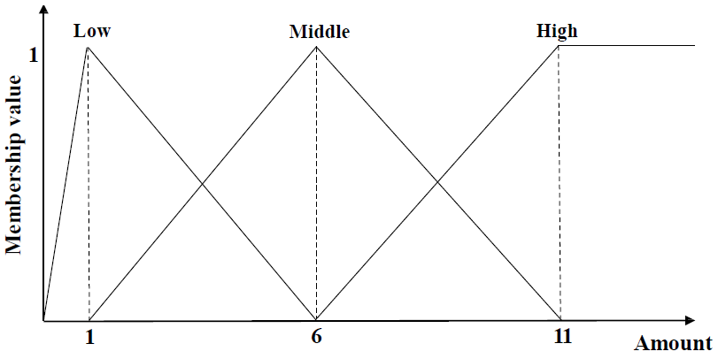

Mining Fuzzy Frequent Itemsets in a quantitative transaction database using the FFI-Miner algorithm (SPMF documentation)
How to run this example?
- If you are using the graphical interface, (1) choose the "FFI-Miner" algorithm, (2) select the input file "contextFFIMiner.txt", (3) set the output file name (e.g. "output.txt"), (4) set the minsup parameter to 2, and (5) click "Run algorithm".
- If you want to execute this example from the command line, then execute this command:
java -jar spmf.jar run FFI-Miner contextFFIMiner.txt output.txt 2 in a folder containing spmf.jar and the example input file contextFFIMiner.txt . - If you are using the source code version of SPMF, launch the file "MainTestFFIMiner_saveToFile.java" in the package ca.pfv. SPMF.tests.
What is FFI-Miner?
FFI-Miner is an algorithm for mining fuzzy frequent itemsets in quantitative transactional database. In simple words, a quantitative transactional database is a database where items have quantities.
What is the input?
FFI-Miner takes as input (1) a transaction database with quantity information and a minimum support threshold minSupport (a positive integer). Let's consider the following database consisting of 8 transactions (t1, t2, ..., t8) and 5 items (1, 2, 3, 4, 5). This database is provided in the text file “contextFFIMiner.txt ”in the package ca.pfv.spmf.tests of the SPMF distribution. Moreover, consider the membership function, shown below, which defines three ranges (low, medium, high).
Transaction ID |
Items |
Quantities |
t1 |
1 3 4 5 |
5 10 2 9 |
t2 |
1 2 3 |
8 2 3 |
t3 |
2 3 |
3 9 |
t4 |
1 2 3 5 |
5 3 10 3 |
t5 |
1 3 4 |
7 9 3 |
t6 |
2 3 4 |
2 8 3 |
t7 |
1 2 3 |
5 2 5 |
t8 |
1 3 4 5 |
3 10 2 2 |

Fuzzy membership function
Why FFI-Miner is useful?
In real-life situations, it is difficult to handle quantitative databases using crisp sets. Fuzzy-set theory is useful to handle quantitative databases. Based on the fuzzy-set theory, the fuzzy frequent itemset mining algorithm FFI-Miner was proposed. It relies on a designed fuzzy-list structure to discover fuzzy itemsets. Compared to previous works, FFI-Miner has excellent performance for the discovery of fuzzy itemsets.
Input file format
The input file format of FFI-Miner is defined as follows. It is a text file. Each line represents a transaction. Each line is composed of three sections, as follows.
- First, the items contained in the transaction are listed. An item is represented by a positive integer. Each item is separated from the next item by a single space. It is assumed that all items within a same transaction (line) are sorted according to a total order (e.g. ascending order) and that no item can appear twice within the same transaction.
- Second, the symbol ":" appears and is followed by the sum of the quantities in that transaction.
- Third, the symbol ":" appears and is followed by the quantity of each item in this transaction (an integer), separated by single spaces.
For example, for the previous example, the input file is defined as follows:
1 3 4 5:26:5 10 2 9
1 2 3:13:8 2 3
2 3:12:3 9
1 2 3 5:21:5 3 10 3
1 3 4:19:7 9 3
2 3 4:13:2 8 3
1 2 3:12:5 2 5
1 3 4 5:19:3 10 2 2
Consider the first line. It means that the transaction {1, 3, 4, 5} has a total quantity of 26 and that items1, 3, 4 and 5 respectively have a quantity of 5, 10, 2 and 9 in this transaction. The following lines follow the same format.
Output file format
The output file format of FFI-Miner is defined as follows. It is a text file, where each line represents a fuzzy frequent itemset. On each line, the items of the itemset are first listed. Each item is represented by an integer, followed by “.” and either the letter “L”, “M” or “H”. These letters are used to indicate if an item is in the low-range, medium-range or high range in terms of the fuzzy membership function. After, all the items, the keyword "#FLV:" appears, which is followed by a float value indicating the fuzzy value of that itemset.
1.M #FVL: 4.2
1.M 2.L #FVL: 2.0
1.M 3.H #FVL: 2.6000001
2.L #FVL: 3.6
4.L #FVL: 2.8
4.L 3.H #FVL: 2.6000001
3.H #FVL: 4.0000005
For example, the first line indicates that the itemset 1 has a fuzzy value of 4.2 and is in the medium range of the fuzzy membership function. The other lines follow the same format.
Performance
FFI-Miner is a very efficient algorithm. It uses a designed fuzzy-list structure to identify unpromising candidates early, and thus speed up the discovery of fuzzy itemsets.
Where can I get more information about the algorithm?
This is the reference of the article describing the FFI-Miner algorithm:
Jerry Chun-Wei Lin, Ting Li, Philippe Fournier-Viger, and Tzung-Pei Hong. A Fast Algorithm for Mining Fuzzy Frequent Itemsets[J]. Journal of Intelligent & Fuzzy Systems, 2015, 29(6):2373-2379.
For a good overview of frequent itemset mining algorithms, you may read this survey paper.